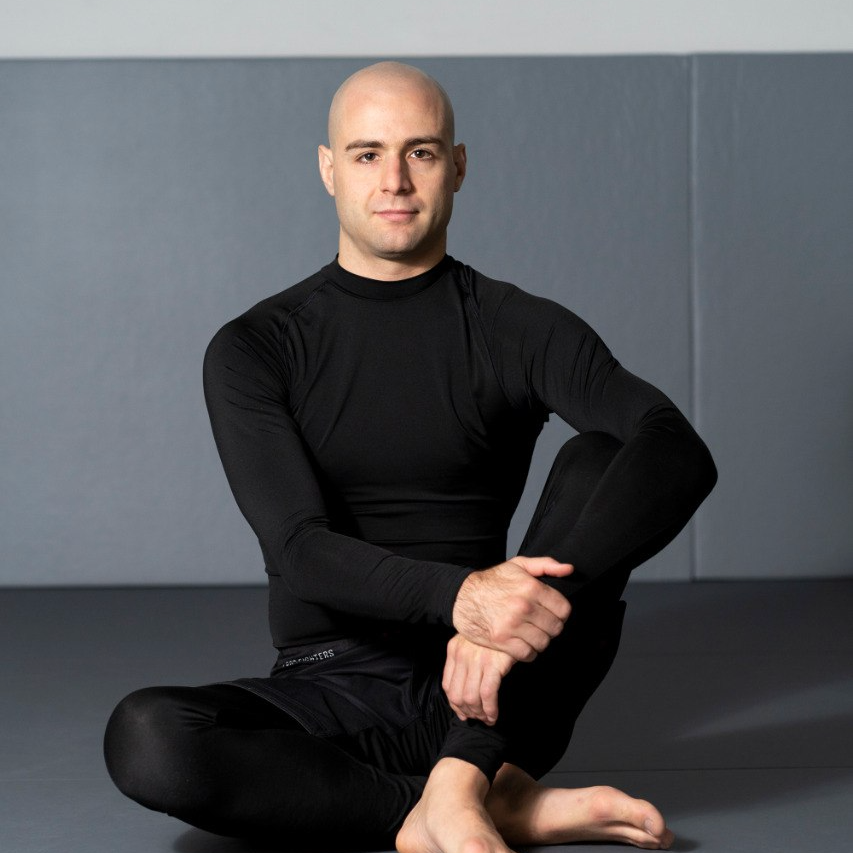

Our Head Coach

Martino Sacchi
Black Belt under David Blankenheimer
PhD in Philosophy
13+ years of Jiu-Jitsu experience
Martino combines his deep understanding of philosophy with over a decade of jiu-jitsu expertise to deliver highly effective training methods.
Manifesto
We believe in
- Treating adults like adults, not disciples
- Clear, open communication - got feedback? Let us know
- A logical, progressive curriculum so you know what and why you're learning
- Modern teaching methods and proven techniques
- Being open to change and evolution
Our commitments
- Train at other gyms - we don't own you
- We respect your life outside jiu-jitsu - coaches are not life coaches
- Train gi or no-gi - we'll add gi classes when there's enough interest
- Your fees go towards your learning, not distant "gurus"
- Promotions are merit-based only, never monetized
Our Values:
- Zero tolerance for toxic behavior, bullying, or harassment
- Clear safeguarding policies (currently being drafted)
- Respect for all members
Find Us
Körtestraße 10, Berlin-Friedrichshain-Kreuzberg
Inside Aikido Dojo Berlin (back left)
Located in the heart of Kreuzberg, where third-wave coffee shops meet underground techno clubs. Yes, we're surrounded by hipsters, but we promise the only thing artisanal here is our jiu-jitsu.